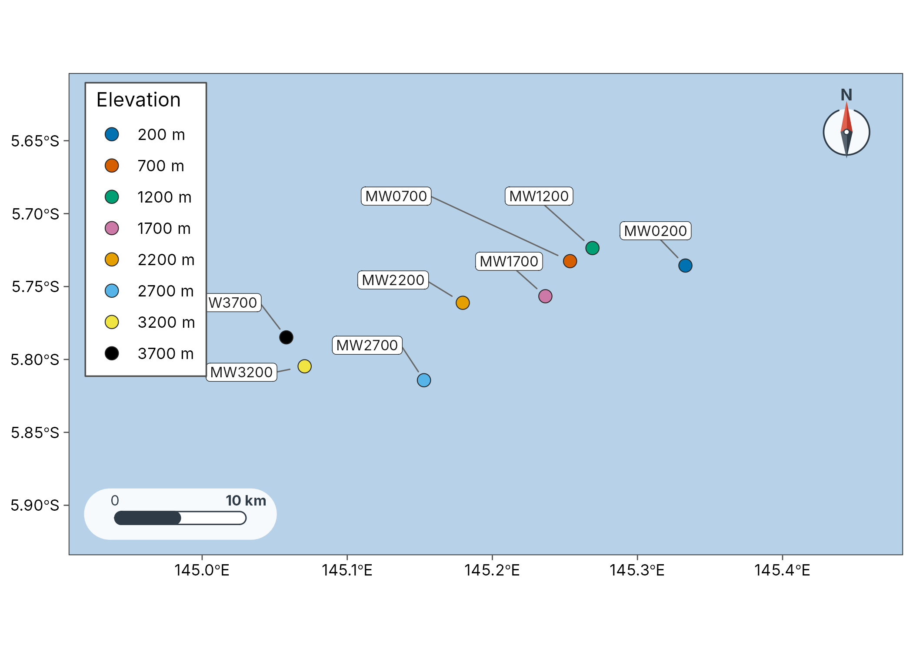
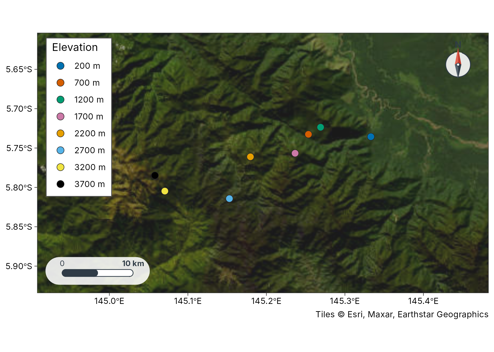
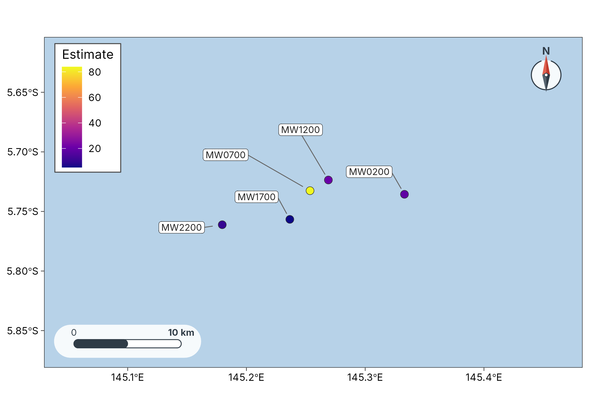
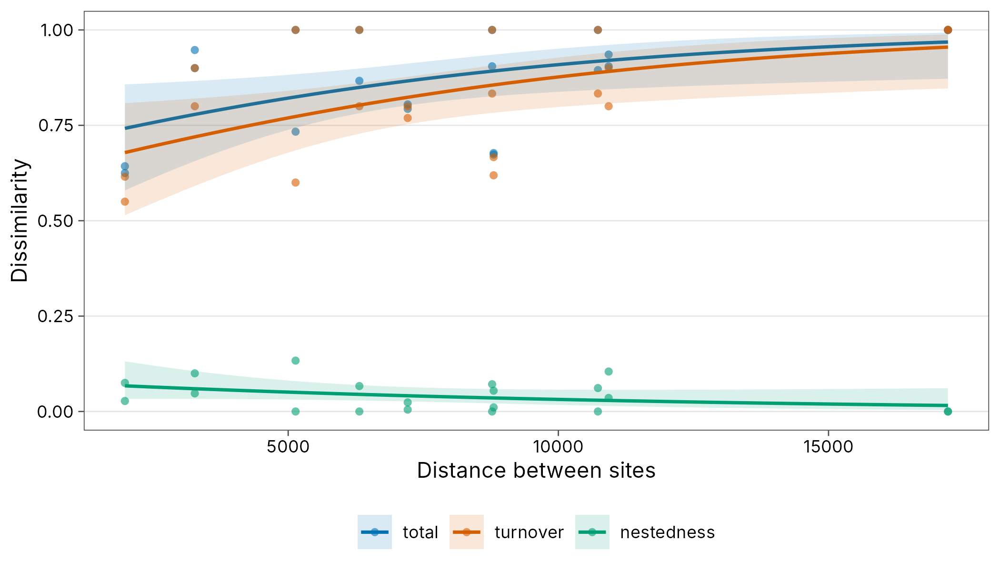
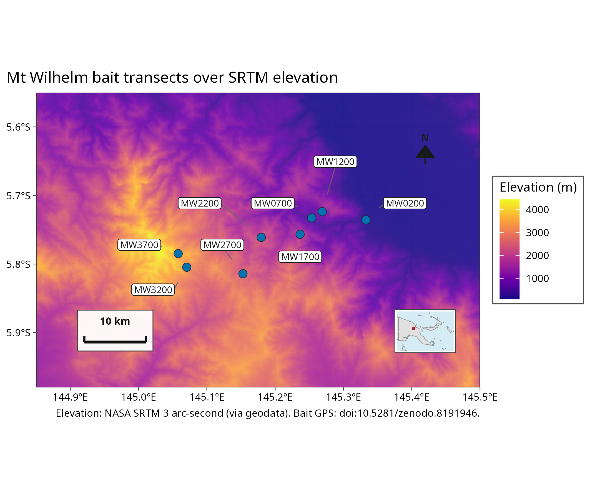
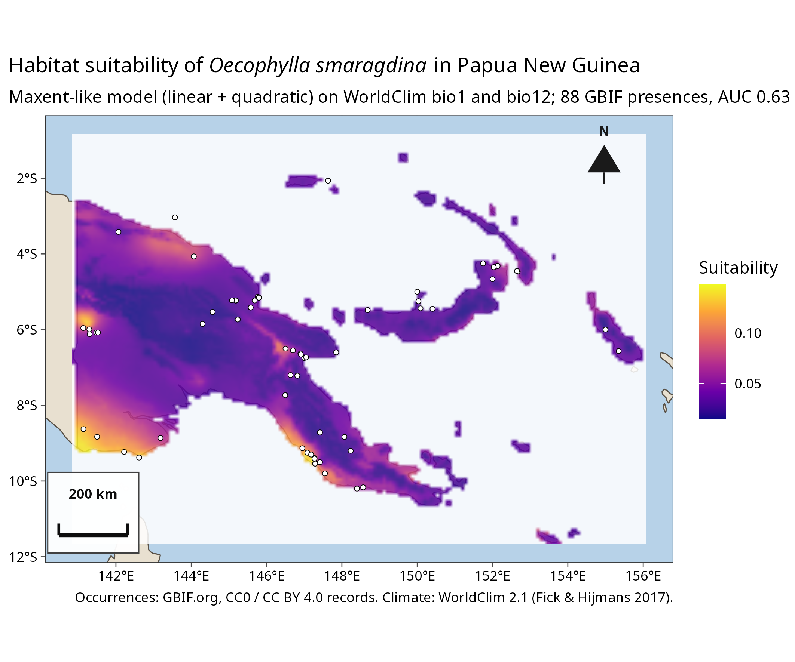

Gallery
gallery.RmdEvery map tidymapr draws. Each entry has three tabs: the map, the
tidy table behind it, and the code. Maps use the colour-blind-safe
Okabe-Ito palette and theme_tidymapr(), which matches
tidydiversity::theme_tidydiversity(). Every map uses real,
published records: geo_example_sites() returns the bait GPS
of the Mt Wilhelm ant survey (png_ants_sites; Mottl, Moses
and Klimes 2023, doi:10.5281/zenodo.8191946).
library(tidymapr)
library(tidydiversity)
library(ggplot2)
set.seed(1)
sites <- geo_example_sites("wilhelm")Study-site map
#> Warning: No Natural Earth land data available; install rnaturalearth.
#> ℹ Returning an empty land layer. Pass `coastline` or use a tile basemap.
sites
#> # A tibble: 8 × 6
#> site lon lat elevation elevation_band coordinate_note
#> <chr> <dbl> <dbl> <int> <fct> <chr>
#> 1 MW0200 145. -5.74 200 200 m published bait GPS, doi:10.5281/z…
#> 2 MW0700 145. -5.73 700 700 m published bait GPS, doi:10.5281/z…
#> 3 MW1200 145. -5.72 1200 1200 m published bait GPS, doi:10.5281/z…
#> 4 MW1700 145. -5.76 1700 1700 m published bait GPS, doi:10.5281/z…
#> 5 MW2200 145. -5.76 2200 2200 m published bait GPS, doi:10.5281/z…
#> 6 MW2700 145. -5.81 2700 2700 m published bait GPS, doi:10.5281/z…
#> 7 MW3200 145. -5.80 3200 3200 m published bait GPS, doi:10.5281/z…
#> 8 MW3700 145. -5.78 3700 3700 m published bait GPS, doi:10.5281/z…
sites <- geo_example_sites("wilhelm")
plot_sites(sites, lon, lat, colour = elevation_band, label = site, basemap = "coast")Study sites on a tile basemap

sites[c("site", "lon", "lat", "elevation")]
#> # A tibble: 8 × 4
#> site lon lat elevation
#> <chr> <dbl> <dbl> <int>
#> 1 MW0200 145. -5.74 200
#> 2 MW0700 145. -5.73 700
#> 3 MW1200 145. -5.72 1200
#> 4 MW1700 145. -5.76 1700
#> 5 MW2200 145. -5.76 2200
#> 6 MW2700 145. -5.81 2700
#> 7 MW3200 145. -5.80 3200
#> 8 MW3700 145. -5.78 3700
# "osm", "carto", "carto_dark" and "esri" tiles; falls back to "coast" offline
plot_sites(sites, lon, lat, colour = elevation_band, basemap = "esri")Hill numbers on a map
#> Warning: No Natural Earth land data available; install rnaturalearth.
#> ℹ Returning an empty land layer. Pass `coastline` or use a tile basemap.
est_dry
#> # A tibble: 5 × 10
#> season site q observed estimate se lower upper lon lat
#> <chr> <chr> <dbl> <dbl> <dbl> <dbl> <dbl> <dbl> <dbl> <dbl>
#> 1 dry MW0200 0 16 18.4 NA NA NA 145. -5.74
#> 2 dry MW0700 0 15 83.9 NA NA NA 145. -5.73
#> 3 dry MW1200 0 13 20.9 NA NA NA 145. -5.72
#> 4 dry MW1700 0 5 5.24 NA NA NA 145. -5.76
#> 5 dry MW2200 0 6 10.2 NA NA NA 145. -5.76
est <- div_estimate(png_ants, q = 0, nboot = 0, .by = season)
est <- dplyr::left_join(est, sites[c("site", "lon", "lat")], by = "site")
plot_geo(est[est$season == "dry", ], estimate, lon, lat, label = site, basemap = "coast")Distance decay

decay
#> # A tibble: 20 × 7
#> season site_1 site_2 turnover nestedness total distance
#> <chr> <chr> <chr> <dbl> <dbl> <dbl> <dbl>
#> 1 dry MW0200 MW0700 0.667 0.0108 0.677 8802.
#> 2 dry MW0200 MW1200 0.769 0.0239 0.793 7212.
#> 3 dry MW0200 MW1700 0.8 0.105 0.905 10931.
#> 4 dry MW0200 MW2200 1 0 1 17211.
#> 5 dry MW0700 MW1200 0.615 0.0275 0.643 1978.
#> 6 dry MW0700 MW1700 0.8 0.1 0.9 3272.
#> 7 dry MW0700 MW2200 0.833 0.0714 0.905 8774.
#> 8 dry MW1200 MW1700 1 0 1 5137.
#> 9 dry MW1200 MW2200 0.833 0.0614 0.895 10732.
#> 10 dry MW1700 MW2200 1 0 1 6317.
#> 11 wet MW0200 MW0700 0.619 0.0544 0.673 8802.
#> 12 wet MW0200 MW1200 0.8 0.00488 0.805 7212.
#> 13 wet MW0200 MW1700 0.9 0.0355 0.935 10931.
#> 14 wet MW0200 MW2200 1 0 1 17211.
#> 15 wet MW0700 MW1200 0.55 0.075 0.625 1978.
#> 16 wet MW0700 MW1700 0.9 0.0474 0.947 3272.
#> 17 wet MW0700 MW2200 1 0 1 8774.
#> 18 wet MW1200 MW1700 0.6 0.133 0.733 5137.
#> 19 wet MW1200 MW2200 1 0 1 10732.
#> 20 wet MW1700 MW2200 0.8 0.0667 0.867 6317.Sites over SRTM elevation

Both transects of every elevation band, with the mean GPS elevation of their baits:
png_ants_sites
#> # A tibble: 16 × 7
#> site transect elevation_band elevation lon lat baits
#> <chr> <int> <int> <int> <dbl> <dbl> <int>
#> 1 MW0200 1 200 216 145. -5.74 60
#> 2 MW0200 2 200 249 145. -5.74 60
#> 3 MW0700 1 700 716 145. -5.73 60
#> 4 MW0700 2 700 774 145. -5.73 60
#> 5 MW1200 1 1200 1166 145. -5.72 60
#> 6 MW1200 2 1200 1089 145. -5.72 60
#> 7 MW1700 1 1700 1638 145. -5.76 60
#> 8 MW1700 2 1700 1840 145. -5.76 60
#> 9 MW2200 1 2200 2398 145. -5.76 60
#> 10 MW2200 2 2200 2339 145. -5.76 60
#> 11 MW2700 1 2700 2752 145. -5.81 60
#> 12 MW2700 2 2700 2617 145. -5.81 60
#> 13 MW3200 1 3200 3404 145. -5.80 60
#> 14 MW3200 2 3200 3259 145. -5.81 60
#> 15 MW3700 1 3700 3825 145. -5.79 60
#> 16 MW3700 2 3700 3916 145. -5.78 60
# SRTM 3 arc-second tiles either side of 145 E, cached at run time
srtm <- file.path(tools::R_user_dir("tidymapr", "cache"), "elevation")
dem <- terra::merge(
geodata::elevation_3s(lon = 144.9, lat = -5.8, path = srtm),
geodata::elevation_3s(lon = 145.2, lat = -5.8, path = srtm)
)
dem <- terra::crop(dem, terra::ext(144.85, 145.5, -5.98, -5.55))
names(dem) <- "Elevation (m)"
plot_sites(
sites, lon, lat,
label = site, raster = dem, basemap = "none",
inset = "png", legend_position = "outside"
)Species distribution model (GBIF and WorldClim)
Habitat suitability of the green tree ant Oecophylla
smaragdina across Papua New Guinea. Presences are GBIF records
released under CC0 or CC BY 4.0 (GBIF occurrence search, 6 November
2026; dataset keys in the table), and the predictors are WorldClim 2.1
mean annual temperature (bio1) and annual rainfall (bio12) at 5
arc-minutes (Fick and Hijmans 2017, doi:10.1002/joc.5086). The
model is the native Maxent-like engine of sdm_fit() with
2000 background points; its modest AUC (0.63) is shown on the map.

occ <- read.csv(
system.file("extdata", "gbif_oecophylla_png.csv", package = "tidymapr"),
colClasses = c(gbif_id = "character")
)
tibble::as_tibble(occ)
#> # A tibble: 96 × 8
#> gbif_id dataset_key species lon lat year basis_of_record license
#> <chr> <chr> <chr> <dbl> <dbl> <int> <chr> <chr>
#> 1 1037289274 beed1b50-8c73-1… Oecoph… 147. -6.63 1972 PRESERVED_SPEC… CC BY …
#> 2 1037289294 beed1b50-8c73-1… Oecoph… 147 -6.73 1963 PRESERVED_SPEC… CC BY …
#> 3 1037289296 beed1b50-8c73-1… Oecoph… 144. -4.07 1972 PRESERVED_SPEC… CC BY …
#> 4 1037289303 beed1b50-8c73-1… Oecoph… 144. -3.03 1979 PRESERVED_SPEC… CC BY …
#> 5 1037289304 beed1b50-8c73-1… Oecoph… 147 -6.75 1955 PRESERVED_SPEC… CC BY …
#> 6 1037289306 beed1b50-8c73-1… Oecoph… 155 -6 1956 PRESERVED_SPEC… CC BY …
#> 7 1037289307 beed1b50-8c73-1… Oecoph… 155. -6.57 1956 PRESERVED_SPEC… CC BY …
#> 8 1037289314 beed1b50-8c73-1… Oecoph… 147. -6.55 1955 PRESERVED_SPEC… CC BY …
#> 9 1037289321 beed1b50-8c73-1… Oecoph… 150 -5 1944 PRESERVED_SPEC… CC BY …
#> 10 1037289323 beed1b50-8c73-1… Oecoph… 147. -9.5 1962 PRESERVED_SPEC… CC BY …
#> # ℹ 86 more rows
occ <- read.csv(
system.file("extdata", "gbif_oecophylla_png.csv", package = "tidymapr")
)
clim <- geo_worldclim(c("bio1", "bio12"), res = 5)
clim <- terra::crop(clim, terra::ext(140.8, 156.1, -11.7, -0.8))
png0 <- rnaturalearth::ne_countries(
country = "Papua New Guinea", scale = "medium", returnclass = "sf"
)
clim <- terra::mask(clim, terra::vect(png0))
fit <- sdm_fit(occ, predictors = clim, engine = "maxnet",
n_background = 2000, seed = 1)
sdm_evaluate(fit)
grid <- terra::as.data.frame(clim, xy = TRUE, cells = TRUE, na.rm = TRUE)
names(grid)[2:3] <- c("lon", "lat")
suit <- clim[[1]]
terra::values(suit) <- NA_real_
suit[grid$cell] <- sdm_predict(fit, newdata = grid)$suitability
plot_sdm(suit, basemap = "coast") +
geom_point(data = occ, aes(lon, lat), shape = 21, fill = "white")A stem map over topography (plot_topo()) is not shown:
there is no openly licensed stem inventory to draw it from, and the
gallery does not map invented trees. The figures in these two entries
are rendered at 300 dpi by data-raw/gallery_maps.R, because
the elevation tiles and climate rasters are downloaded at run time.